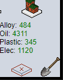
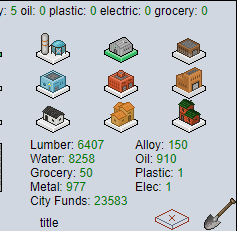
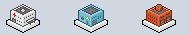
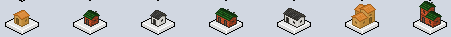
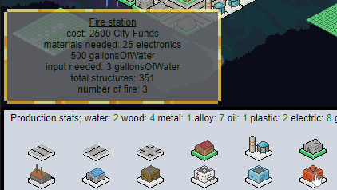

Idle City Sim 2051 Guide
Build up your city by selecting roads and buildings from the menu and placing them on the map.
There are four regions that can be built up.
You can click/touch the shovel in the lower right corner when on a empty spot in the map
to dig for water, wood, metal and oil.

Because of that you don't need to concentrate on those buildins at first,
first get alloy factories, then plastic and electric so you can make a fire station.
Then build up to police.
Afterward start building residential small houses.
If you run low on city funds you can click on the alloy amount to turn 10 alloy into 100 cityFunds:

You can click on Metal to refine 2 Alloy from 1 Metal.
You can turn off mishaps in the options menu from the title screen.
If mishaps are on, every so often a disaster will happen.
Either a robbery, a fire, or sickness.
Robberies are stopped by Police,
fires by the Fire Station, and sickness by the Hospital.

Sickness only happens in residential buildings.

If there is 1 Police station per 120 buildings, including roads, robberies always get caught.
If there is 1 Fire Station per 80 buildings and roads, fires always get put out.
If there is 1 Hospital per 75 buildings and roads, sickness always gets cured.
(sickness causes the people to move out and house sold, same effect as if destroyed by fire)
You can hover over each emergency building to see how many buildings there are;

Disaster Log
Gameplay video
This game was made using tad's basic game objects.